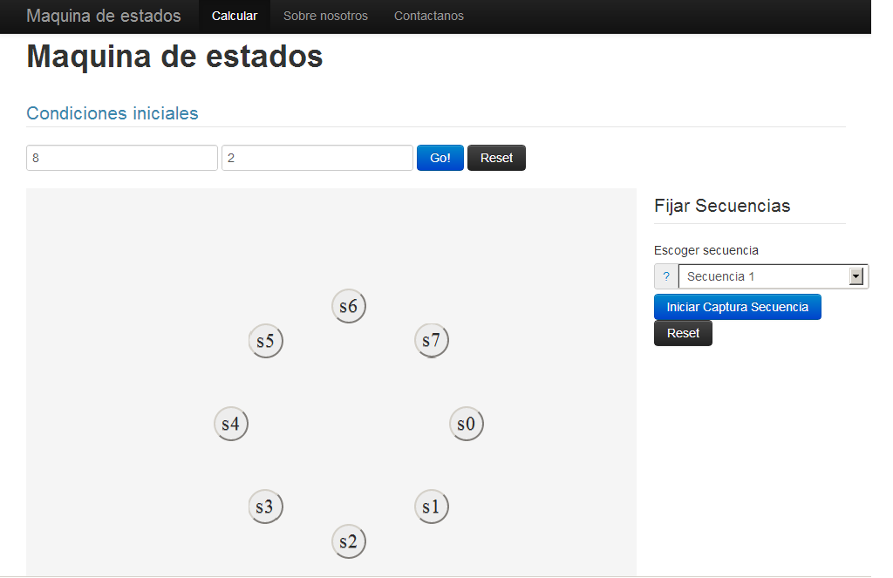

Manual de Usuario
Una Máquina de Estado Finitos (Finite State Machine), llamada también Autómata Finito es una abstracción computacional que describe el comportamiento de un sistema reactivo mediante un número determinado de Estados y un número determinado de Transiciones entre dicho Estados. Las Transiciones de un estado a otro se generan en respuesta a eventos de entrada externos e internos; a su vez estas transiciones y/o subsecuentes estados pueden generar otros eventos de salida. Esta dependencia de las acciones (respuesta) del sistema a los eventos de entrada hace que las Máquinas de Estado Finito (MEF) sean una herramienta adecuada para el diseño de Sistemas Reactivos y la Programación Conducida por Eventos (Event Driven Programming), cual es el caso de la mayoría de los sietemas embebidos basados en microcontroladores o microprocesadores. Esta aplicacion permite simular una Maquina de Estados Finitos, permitiendo al usuario elegir el tipo de flip flop (JK o RS).
- Generar la ecuacion simplificada haciendo uso del Algoritmo de Quine McCluskey para cada variable teniendo en cuenta el tipo de flip flop elegido.
- Comparar el comportamiento de la maquina de estados eligiendo el flip flop JK y luego el flip flop RS.
- Identificar las diferencias en las ecuaciones generadas al elegir cada flip flop.
- Primer Paso
- Ingrese numereo de estados y secuencias.
- Elija el tipo de Flip Flop con el cual desea iniciar la simulacion.
- Luego oprima el boton Go!.
- Segundo Paso
- Elija la secuencia que va a ingresar y oprima el boton Iniciar Captura de Secuencia.
- Tercer Paso
- Inicie la fijacion de la secuencia haciendo clic en origen y destino para cada "salto".
- Luego oprima el boton Fijar Secuencia Actual.
- Regrese al segundo paso para fijar las secuencias restantes.
- Cuarto paso
- Oprima el boton generar ecuaciones.